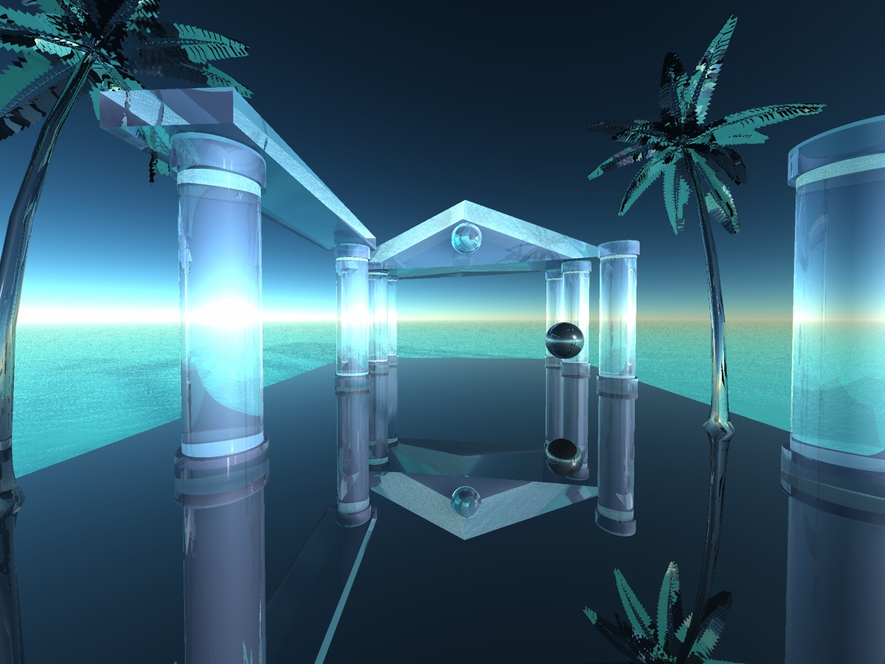

G A Z E B O

A T L A N T I S
Saudades de uma época que não vivi.
Isto é um link
Isto é um link
Estruturas gregas São comumente utilizadas para representar uma Atlantis que não sucumbiu. Evoluiu e se informatizou.